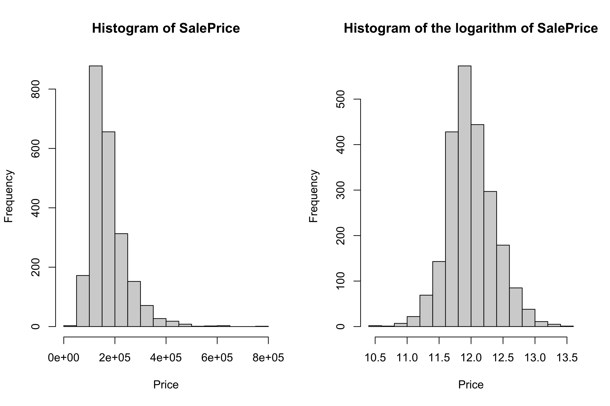
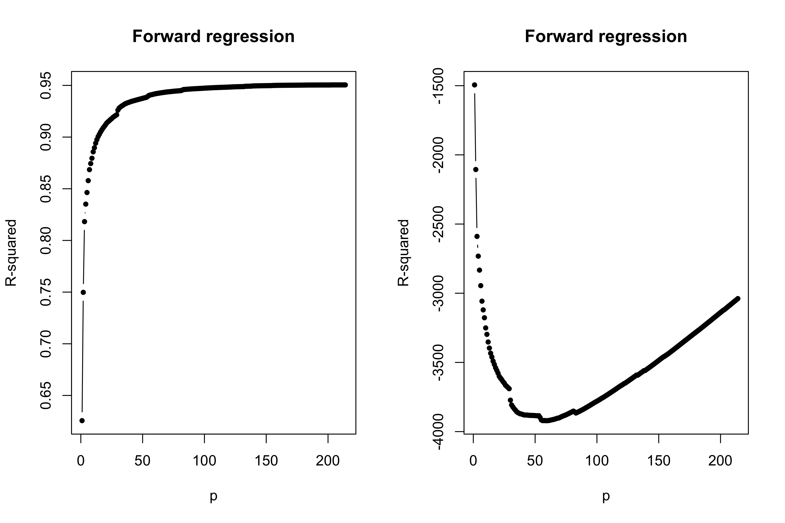
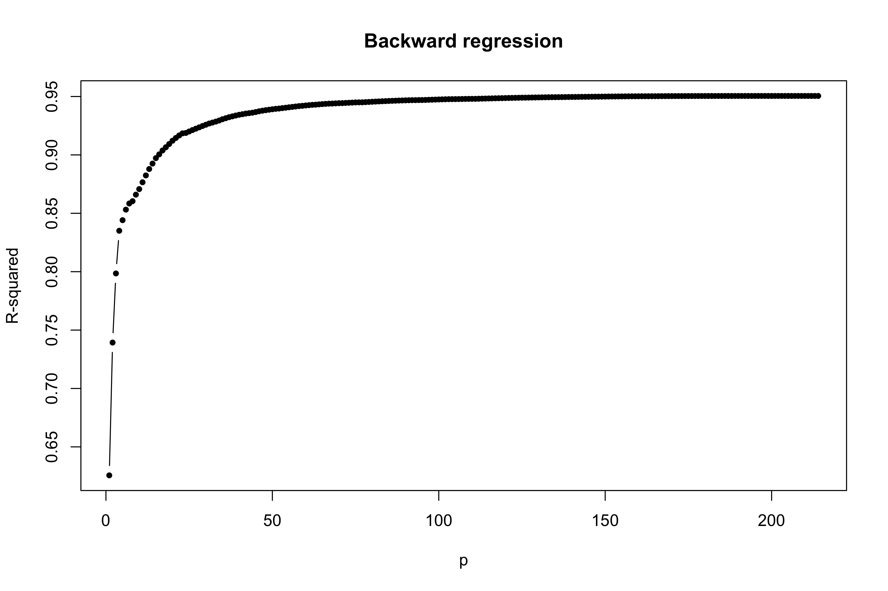
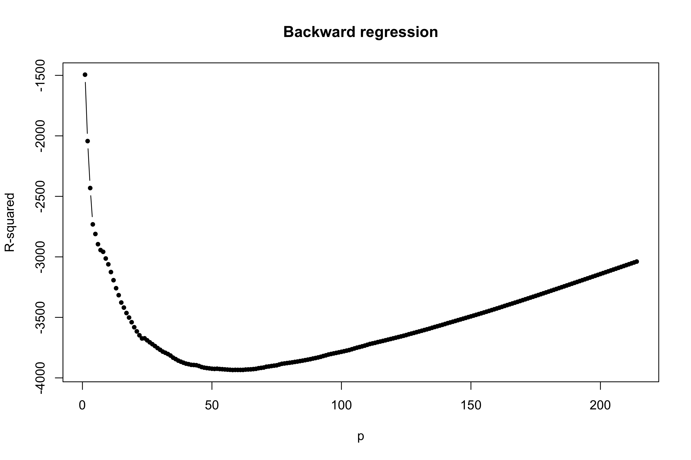

This is the second lab of the course Data Mining. The code is not fully commented, because it will be executed and described in-class. The associated code lab2.R is available online.
The Ames housing problem
Suppose you are interested in buying a new house in the town of Ames, which is located in the US state of Iowa.
You want to focus your search on houses that you expect to be able to afford.
Can you predict the price of the house based on its characteristics?
This is a Kaggle playground competition1. You can join the competition, if you like. Keep in mind that the full dataset, including the test set, is public…
Problem description
This is a prediction problem, in which the sale price is the output variable (response).
You have some information from all of the houses sold over the past few years, including the number of bedrooms, the size of the house, the year the house was built, etc.
This unit is organized into two sections:
We clean the data and perform some exploratory data analysis to gain some preliminary understanding of the data;
We exploit advanced regression techniques to predict the price of the house using all the remaining input variables (covariates).
In other words, we will try to estimate a function f(\cdot) such that
(\texttt{SalePrice}) = f(\texttt{GarageArea},\texttt{Neighborhood}, \dots) + \epsilon.
The first thing we need to do is understanding the meaning of each variable.
glimpse(ames)skimr::skim(ames)
We have access to a detailed documentation. Reading the documentation can be time-consuming… but it is probably the most important part of the analysis.
Houses or commercial activities?
A minority of the observations are non residential buildings, as indicated by the MS Zoning variable.
table(ames$`MS Zoning`)
A (agr) C (all) FV I (all) RH RL RM
2 25 139 2 27 2273 462
Our goal is to predict the price of a residential building, therefore it makes sense to exclude these observations from the dataset.
# From the documentation:# "C (all)" = Commercial sales# "I (all)" = Industrial sales# "A (agr)" = Agricultural sales# "FV" = Floating village salesames <-filter(ames, !(`MS Zoning`%in%c("C (all)", "I (all)", "A (agr)", "FV")))
Sales typology
There is a second caveat. In the original ames dataset there are different type of sales:
table(ames$`Sale Condition`)
Abnorml AdjLand Alloca Family Normal Partial
174 12 22 46 2305 203
The prices of non-standard sales might be skewed. Moreover, we do not want to predict the price based on the type of sales (Sale Type).
We are interested only in Normal sales, therefore we exclude adjoining land purchases, deed re-allocations, internal-family sales, and incomplete houses.
# Only normal salesames <-filter(ames, `Sale Condition`=="Normal")# The variables can be droppedames <-select(ames, -c(`Sale Condition`, `Sale Type`))
After these operations, we are left with n = 2305 observations and 80 variables.
Variables and documentation
From the documentation we learn that both Order and PID can be removed from the dataset, as they carry no information about SalePrice.
# Drop the variablesames <-select(ames, -c(Order, PID))
Moreover, we can build some intuition and expectations about the variables. A few randomly selected examples:
The variable Overall Qual looks important, being the rate of the overall material and finish of the house;
Do we need both GarageCars and GarageArea as predictors?
A few variables has structural missing data, such as FireplaceQu, i.e. the quality of the fireplace.
General tip: ask yourself as many questions as possible about the data: what is the correct typology of each variable? Is it numerical, ordinal, or discrete? Are there irrelevant variables?)
The output variable
General tip: start any data analysis by making graphs and calculating some descriptive statistics of the key variables.
The most important variable is arguably SalesPrice, being our target:
summary(ames$SalePrice)
Min. 1st Qu. Median Mean 3rd Qu. Max.
35000 129000 157000 174640 203000 755000
Thus, the average cost of a house in Ames is about 175k USD, ranging from a minimum of 35k to a maximum of 755k.
The output variable II
The distribution of SalePrice is slightly asymmetric, as it is often the case with prices. Idea: what about taking the log?
par(mfrow =c(1, 2))hist(ames$SalePrice, xlab ="Price", main ="SalePrice")hist(log(ames$SalePrice), xlab ="Price", main ="Logarithm of SalePrice")

Missing values
The ames dataset has a lot of missing values, most of which are structural.
# Compute the frequency of the missing values for each variablefreq_missing <-apply(ames, 2, function(x) sum(is.na(x))) # Number of missing valuessort(freq_missing, decreasing =TRUE)
Imputation is not a good idea for most of these variables. A missing value for Pool QC means that there is no pool in the house, therefore we should not try to “impute” it.
Instead, it makes much more sense to recode these categorical variables.
The variable Garage Yr Blt is more problematic. By replacing missing values with No garage would transform this variable into a categorical variable.
For the sake of simplicity, given its low predictive value (i.e. the year of construction of the garage), in this analysis we just exclude this variable.
The theory suggests that more variables = higher variance of the estimates.
Thus, deleting irrelevant variables is a useful practice, as long as we expect them to be not related to the target variables and/or because we believe the information is already contained in other variables.
We already deleted Order and PID before, but other examples are the following variables:
# Most of the information is already included in House Ageames <-select(ames, -c(`Mo Sold`, `Yr Sold`, `Year Remod/Add`, `Year Built`))# Most of the information is already included in Porch Sq Feetames <-select(ames, -c(`Open Porch SF`, `Enclosed Porch`, `3Ssn Porch`, `Screen Porch`))# Most of the information is already included in Tot Bathroomsames <-select(ames, -c(`Full Bath`, `Half Bath`, `Bsmt Full Bath`, `Bsmt Half Bath`))# Almost no information is present in these variablesames <-select(ames, -c(`Pool Area`, Utilities))
What else?
There are certainly many other fixes one could perform on this dataset.
Data-cleaning is a never-ending process. There are certainly many other aspects of the data that improved.
However, we need to stop at a certain stage. In this lecture we will not perform additional data cleaning.
An example could be using the info contained in the variable PID to obtain the geographical coordinates of each house.
You are highly encouraged to explore / polish the data even more! It is also possible that further exploration could lead to improved predictions.
If you are curious about other cleaning operations that you could perform, you can have a look at this R code associated to this book chapter.
It is now time to split the data into training set (2/3 of the data) and test set (1/3 of the data).
This is very easy from a coding point of view, but it is the most delicate step: many things can go horribly wrong if this operation is not performed correctly.
Never perform operations involving the target variable SalePrice on the full dataset. In particular, never “clean” the data on the basis of the target, this could lead to overfitting.
# Manual subdivision in training / testset.seed(123)# Randomly allocate the id of the variables into training and testid_train <-sort(sample(1:nrow(ames), size =floor(2/3*nrow(ames)), replace =FALSE))id_test <-setdiff(1:nrow(ames), id_train)# Create two different datasetsames_train <- ames[id_train, ]ames_test <- ames[id_test, ]
From now on, it is forbidden to look at the test set until the very end of the analysis.
A simple linear regression model is already capable of predicting the sale price with an average error of 20k, which is remarkable given its simplicity.
We can improve over the previous linear model by adding more covariates…
However, there are too many of them! Some form of regularization is needed.
The full model
# Here I compute some basic quantitiesX_train <-model.matrix(SalePrice ~ ., data = ames_train)[, -1]y_train <- ames_train$SalePricen <-nrow(X_train)p <-ncol(X_train) # This does not include the interceptc(n, p)
[1] 1536 223
m_full <-lm(SalePrice ~ ., data = ames_train)summary(m_full)
# 4 collinearities are due to "no basement", 3 collinearities are due to "no garage"# Moreover, note that at the basementhead(cbind( ames_train$Bsmt.Unf.SF + ames_train$BsmtFin.SF.1+ ames_train$BsmtFin.SF.2, ames_train$Total.Bsmt.SF))
par(mfrow =c(1, 2))plot(fit_forward_summary$p, fit_forward_summary$r.squared, type ="b", cex =0.8, pch =16, ylab ="R-squared", xlab ="p", main ="Forward regression")plot(fit_forward_summary$p, fit_forward_summary$BIC, type ="b", cex =0.8, pch =16, ylab ="R-squared", xlab ="p", main ="Forward regression")

plot(fit_backward_summary$p, fit_backward_summary$r.squared, type ="b", cex =0.8, pch =16, ylab ="R-squared", xlab ="p", main ="Backward regression")

plot(fit_backward_summary$p, fit_backward_summary$BIC, type ="b", cex =0.8, pch =16, ylab ="R-squared", xlab ="p", main ="Backward regression")

Cross-validation
Footnotes
De Cock, D. 2011. “Ames, Iowa: Alternative to the Boston Housing Data as an End of Semester Regression Project.” Journal of Statistics Education 19 (3).↩︎